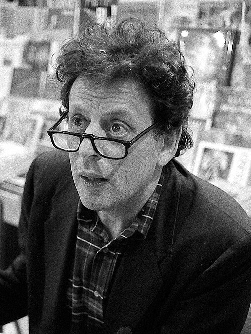

Harto del hermetismo cerebral del serialismo académico europeo de posguerra que alejó al público de las salas de concierto, Philip Glass fundó una revolución sonora en el Nueva York de los años 60: música construida sobre patrones rítmicos aditivos y arpegios armónicos hipnóticos que mutan gradualmente a lo largo del tiempo, inspirados en sus viajes por la India con Ravi Shankar y su aprendizaje en París con Nadia Boulanger. Trabajó como taxista y fontanero hasta los 42 años mientras tocaba con su propio ensamble en galerías de arte; hoy sus óperas llenan el Metropolitan de Nueva York y sus bandas sonoras han marcado hitos cinematográficos (Koyaanisqatsi, Las horas, El show de Truman).
Glass publica y preserva todo su catálogo a través de su propia editorial y sello discográfico independiente Dunvagen Music Publishers / Orange Mountain Music. Su catálogo supera las 15 sinfonías, más de 25 óperas, decenas de conciertos para solistas y una prolífica producción para cine y teatro.
Contexto Vital: Toca teclados amplificados con el Philip Glass Ensemble en lofts del SoHo. Compone 'Music in Twelve Parts' y la ópera de 5 horas sin argumento convencional 'Einstein on the Beach' (1976) con Robert Wilson.
Contexto Vital: Completa su trilogía de óperas sobre hombres que cambiaron el mundo: 'Einstein on the Beach' (la ciencia), 'Satyagraha' (la política y Gandhi) y 'Akhnaten' (la religión). Lanza el álbum 'Glassworks' y musicaliza el documental mudo 'Koyaanisqatsi'.
Contexto Vital: Ciclo monumental de más de 14 sinfonías, conciertos para violín, piano y violonchelo, y nominaciones al Oscar por 'Kundun', 'The Truman Show' y 'The Hours'.
Clasificación por género arquitectónico y trascendencia en la cultura contemporánea:
| Obra | Duración | Año Estreno | Aporte & Significado Conceptual |
|---|---|---|---|
| Einstein on the Beach | Aprox. 5 horas continuas | 1976 | Hito absoluto de la vanguardia escénica; coro que canta exclusivamente números (1, 2, 3...) y notas de solfeo (Do, Re, Mi) con un violín solista vestido de Einstein. |
| Satyagraha | 3 Actos | 1980 | Sobre la resistencia pacífica de Mahatma Gandhi en Sudáfrica; cantada íntegramente en sánscrito antiguo sobre textos del Bhagavad Gita. |
| Akhnaten (Akenatón) | 3 Actos | 1984 | Sobre el faraón hereje que introdujo el monoteísmo solar en Egipto; orquesta sin violines que produce un timbre oscuro y arcaico misterioso. |
| Obra | Dotación | Año | Aporte & Significado Conceptual |
|---|---|---|---|
| Glassworks (Opening, Floe, Islands, Façades) | Piano y ensamble de cámara | 1981 | Su disco más popular; concebido para el flamante formato de casete de audio portátil Walkman con polirritmias de ensueño. |
| Metamorphosis (I a V) | Piano solo | 1988 | Inspirada en el relato de Franz Kafka; oscilaciones meditativas de acordes menores que se convirtieron en referencia del piano neoclásico. |
| Cuarteto de cuerdas n.º 3 'Mishima' | Cuarteto de cuerdas | 1985 | Compuesto para la película de Paul Schrader sobre el escritor japonés Yukio Mishima; energía rítmica implacable y belleza trágica. |
| Obra / Banda Sonora | Director / Género | Año | Aporte & Significado Conceptual |
|---|---|---|---|
| Koyaanisqatsi (Vida fuera de balance) | Godfrey Reggio | 1982 | Piedra angular del cine no narrativo: el bajo pedal gutural y los arpegios desbocados retratan el choque entre la naturaleza virgen y la vorágine urbana tecnológica. |
| The Hours (Las horas) | Stephen Daldry | 2002 | Ganadora del premio BAFTA y nominada al Oscar; entrelaza las vidas de tres mujeres a lo largo de un siglo con un lirismo desgarrador de piano y cuerdas. |
| Sinfonía n.º 1 'Low' | Orquesta sinfónica | 1992 | Sinfonía orquestal basada en los temas vanguardistas del álbum Berlinés 'Low' de David Bowie y Brian Eno. |